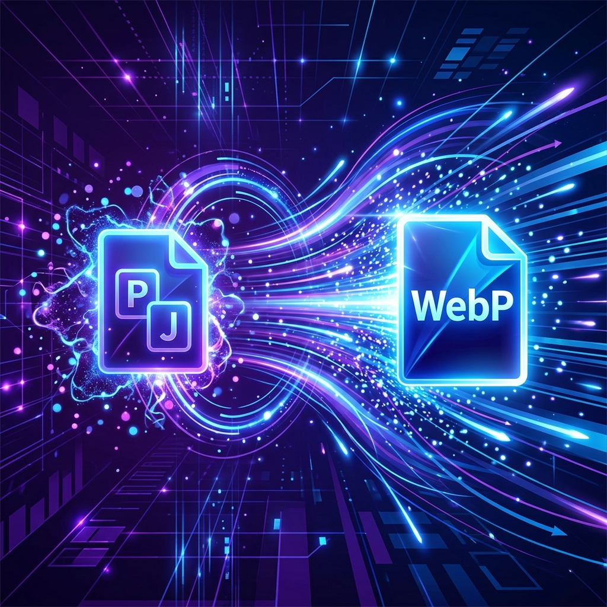

EXIF Metadata Privacy: Why and How to Strip Image Metadata
Did you know your images contain your exact GPS location? Learn how camera devices embed sensitive data in files, and how to automatically strip EXIF metadata using offline client-side tools.

AVIF vs. WebP in 2026: The Ultimate Next-Gen Image Format Showdown
AVIF is now the web's gold standard for compression. Learn how to implement AVIF alongside WebP fallbacks for 100% browser coverage and maximum page speeds.
Bulk Image Resizing: How to Scale Images for Responsive Web Design
Delivering oversized photos wastes massive amounts of bandwidth and memory. Learn how to downscale resolutions, lock aspect ratios, prevent Cumulative Layout Shift (CLS), and use local offline batch processing to optimize page speed.

Mastering WebP: The Ultimate Guide to Image Optimization & Web Speed
WebP is the absolute golden standard for modern web performance. Learn how to configure target quality scales, lock pixel proportions, avoid Cumulative Layout Shift (CLS), and achieve perfect compression ratios without sacrificing visual resolution.
Modern Web Image Formats: WebP, AVIF, PNG, & JPEG Explained
Selecting the right layout media is critical. Compare transparency, animation, bit depths, and compression speeds between AVIF, WebP, PNG, and traditional JPEGs to decide what fits best.
Why Browser-Side Local Image Conversion is the Future of Privacy
Cloud converters present heavy bandwidth leaks and severe document disclosure hazards. Discover how HTML5 Canvas draws and re-encodes pixel grids locally inside sandboxed browser memory.
How Image Compression Boosts SEO Rankings & Core Web Vitals
Page payload directly dictating SEO positioning. Learn Google's technical vitals checklist, including LCP thresholds, lazy loading behaviors, layout shifting triggers, and descriptive alt rules.